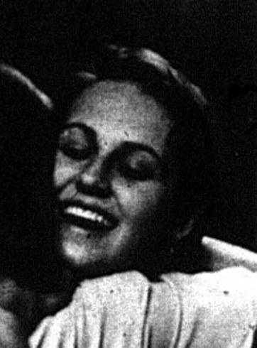

#
Two more emergency phones
The year opened with a security win. The Herald reported that SGA had put two more emergency phones on campus, continuing the safety agenda that had shaped the previous spring's election.
Student Government Association · academic year

Plaque gives maiden name in parentheses - confirmed under Higdon. Named as SGA president for 1995-96 in Herald election coverage ("Tara Higdon Moves Up; Voting Down," 11 Apr 1995) and again as outgoing president in the 1996 succession coverage; the 1994-95 organization record independently names her as that year's Administrative Vice President, noting she would succeed Evans as president and student regent the following year.
Higdon's path to the presidency ran through the campus security debates of 1995. During the spring campaign the Herald reported that her experience of being stalked had influenced her, under the headline "Campus Security: Stalking Influenced Tara Higdon."
After a year as part of the elected leadership alongside Robert Evans, she won the presidency, and the Herald marked the transition with "Tara Higdon Sees New Beginning." Her term brought new emergency phones, a skywalk proposal, a campus store proposal and a push for longer visitation hours.
The SGA's 2001 list of presidents records Tara D. Higdon of Slaughters as the 29th president, serving 1995-96, and marks her as having also served as student regent.
Higdon won the presidency in April 1995, with the Herald reporting the result under the headline 'Tara Higdon Moves Up; Voting Down' - she moved up to the top office even as voter turnout fell. The paper's year-end editorial the following week argued that visibility would be the key to the association's success.
Her year ended in a contested, four-way race to succeed her, and Higdon took a public side: her letter 'Vote for Kristin Miller' ran in the Herald's April 16, 1996 issue, in the same election-week pages as the candidates' debate coverage and the campaign for SGA's constitutional amendments.
The spring of her term was the stormiest stretch in the association's decade of Herald coverage: within a single week in February 1996 the paper carried both SGA's skywalk proposal for the bottom of the Hill and a letter dismissing the association as a 'puppet' group, and by late April a columnist was asking whether students cared about student government at all.
Sources for this account
Everything the archive holds on Tara (Higdon) Howard, gathered on one page.
Everyone the record shows in office this year. Each name goes to their own page, with every office they held and everything the archive says they did.
A Slaughters junior; had served as Administrative Vice President and student regent in 1994-95 before moving up to the presidency.
Herald 70:51, 11 Apr 1995, "Tara Higdon Moves Up; Voting Down"Elected 18 April 1995 and called every Congress meeting to order through the year. He designed the winning entry in SGA's Western flag contest, chosen by Congress on 14 November 1995. Also written Jeffery Yan in the minutes.
SGA Meeting Minutes, 14 Nov 1995Served a second consecutive year as treasurer. He reported summer expenditures of $4,497.08 and a balance of $37,256.92 on 29 August 1995, and told Congress in January that about 60 per cent of the budget remained.
SGA Meeting Minutes, 16 Jan 1996Elected 18 April 1995. She set out the attendance rule under which three unexcused absences sent a member before the Judicial Council, and wrote to every campus organisation about the Points of Light programme.
SGA Meeting Minutes, 29 Aug 1995Convened the committee heads after each Congress meeting and organised the September 1995 phone-a-thon. She also sat on Academic Council for Potter College.
SGA Meeting Minutes, 5 Sep 1995Defended in a Herald letter, alongside Kristen Miller, against a charge of being 'hair-brained' in the skywalk controversy.
Herald 71:38, 13 Feb 1996 PDFA correction: the archive currently records her for this year as an officer whose title is unknown. She was elected Director of Public Relations on 18 April 1995. She introduced seating place cards for the chamber, proposed a Congress dress code that the body then voted down, and took the Western flag designs to Fred Hensley to pass on to President Meredith. Some minutes spell the forename Kristin.
SGA Meeting Minutes, 29 Aug 1995 Herald 71:59, 11 Apr 1996, "Kristen Miller Focuses on Experience in Student Government Association"Announced as chair for the year on 29 August 1995; by the November meetings the committee was reporting under David Apple.
SGA Meeting Minutes, 29 Aug 1995Reported in November 1995 that the committee had legislation up for first reading and was working on a measure about available internet hours.
SGA Meeting Minutes, 14 Nov 1995Planned a forum on Career Services for January 1996 and was voted Committee Member of the Month on 14 November 1995.
SGA Meeting Minutes, 14 Nov 1995Took the committee through the constitution in the spring and brought the resulting amendments to Congress as Bill 96-2-S, passed on second reading 5 March 1996 except for a proposed 2.5 GPA requirement for Congress members, which failed. Carlene and Darlene Lodmell were accepted onto Congress together as sophomore off-campus representatives in August 1995.
SGA Meeting Minutes, 5 Mar 1996Worked on campus lighting through the autumn and wrote legislation in March 1996 about pay phones being removed from campus.
SGA Meeting Minutes, 5 Mar 1996Named chair on 29 August 1995. By November the committee was reporting under co-chair Shawna Whartenby. The surname is spelled Chiappetta on 1998 legislation.
SGA Meeting Minutes, 29 Aug 1995Gathered more than 175 signatures on a petition for a bandstand on the DUC south lawn and was voted Congress Member of the Month for February 1996.
SGA Meeting Minutes, 5 Mar 1996Chaired the Programming Committee, created in autumn 1995 to plan SGA's events alongside Public Relations; he arranged SGA halftime activities for the home game against Southwestern Louisiana on 18 February 1996.
SGA Meeting Minutes, 14 Nov 1995Chaired the Cultural Diversity Committee, also new in autumn 1995, and reported in November that it was drafting legislation for Black History Month.
SGA Meeting Minutes, 14 Nov 1995Chairing by March 1996, when she reported she was working on a forum about conflict between black women and white women.
SGA Meeting Minutes, 5 Mar 1996The 14 things student government staged or ran for the campus this year, drawn from the chronology below. Every one of them also appears on the programmes page, which runs the whole sixty years together.
The year opened with a security win. The Herald reported that SGA had put two more emergency phones on campus, continuing the safety agenda that had shaped the previous spring's election.
The congress met on 29 August 1995 from 5.05 to 5.40 p.m. SGA's own record of the meeting describes business on the State Student Government Conference, elections and setting up committees, the first meeting of Tara Higdon's term held in the digitised minutes.
SGA Records: Meeting Minutes, 29 Aug 1995Read it on this site
September coverage included an SGA dress code and a piece headlined "Tara Higdon Seeks Student Interest in Group," as the new president worked to draw students into the organization.
The meeting of 9 September 1995 took up a voter registration drive, a pep rally and organizational aid. It is the earliest record in this year of the three strands that made up most of SGA's public programme work: registering students to vote, backing athletics events and paying out money to campus clubs.
SGA Records: Meeting Minutes, 9 Sep 1995Read it on this site
Bill 95-1-F, dated 19 September 1995, required any organization receiving SGA aid to have a representative participating in SGA. It made attendance a condition of the money at a time when the Herald was reporting falling interest in the association.
TopSCHOLAR - Bill 95-1-F, Organizational Aid Recipients on COA
Resolution 95-1-F, dated 19 September 1995, requested that the running track be replaced and widened. Track resurfacing had been an SGA request since Resolution 93-8-S, on resurfacing the Smith Stadium track, in 1993.
The meeting of 26 September 1995 discussed Weekend in the Woods, a code of conduct and open positions on the congress. The archive's record names the event but not its programme, so nothing is known here beyond that SGA had it in hand that autumn.
SGA Records: Meeting Minutes, 26 Sep 1995Read it on this site
On 2 October 1995 the congress discussed homecoming, a plan for SGA members to speak to classes, and its open positions. Speaking to classes was the association's standing answer to the visibility problem the Herald returned to all year.
SGA Records: Meeting Minutes, 2 Oct 1995Read it on this site
The meeting of 10 October 1995 took up registration by telephone, a parliamentary procedure workshop for members, and Midnight Mania, the midnight start of basketball practice. The workshop ran again the following week.
SGA Records: Meeting Minutes, 10 Oct 1995Read it on this site
On 17 October 1995 the congress discussed Topline telephone registration, the parliamentary procedure workshop, the Coach for a Game contest and a student leader reception. Coach for a Game had been created by Bill 92-03-S in 1992 and was still running four years later.
SGA Records: Meeting Minutes, 17 Oct 1995Read it on this site
Two resolutions carry the date 17 October 1995. Resolution 95-3-F asked that the Creason parking lot be paved and Resolution 95-4-F requested a handrail by the Schneider Hall drive.
The meeting of 24 October 1995 discussed faculty evaluations, recommendations arising from the university's Moving to a New Level review, a recycling plan and a meeting with Dave Parrot. Faculty evaluations dominated the congress's autumn and ran into a missed deadline in November.
SGA Records: Meeting Minutes, 24 Oct 1995Read it on this site
On 31 October 1995 the congress discussed SGA surveys, discount cards and academic credit for residence hall assistants. A student discount card had been an SGA product since Bill 85-15-F a decade earlier.
SGA Records: Meeting Minutes, 31 Oct 1995Read it on this site
The Herald reported that pay for student government presidents was higher at other schools, an early airing of a compensation question that would recur in later decades.
Resolution 95-8-F, dated 7 November 1995, requested security cameras in the parking garage and the parking lots. It belongs to the run of campus-safety measures that began with the emergency phones of the previous spring and continued with the lighting resolution later that month.
TopSCHOLAR - Resolution 95-8-F, Install Surveillance Cameras
The meeting of 14 November 1995 ran from 5.00 to 5.50 p.m., the longest autumn meeting in the digitised minutes, and covered faculty evaluations, community service and door security scanners. Two days later the Herald reported that SGA would miss its deadline on the evaluations.
SGA Records: Meeting Minutes, 14 Nov 1995Read it on this site
Resolution 95-9-F, dated 14 November 1995, asked for the creation of an academic service fee to cover the cost of adding and dropping classes. The Herald reported the following week that the congress would vote on the drop/add fee proposal.
TopSCHOLAR - Resolution 95-9-F, Establish an Academic Service Fee
The Herald reported in November 1995 that campus organisations had divided an SGA award between them. The item is one of the few surviving traces of SGA's organisational funding in 1995-96.
Herald 71:20, 16 Nov 1995 - LaBelle, "Student Groups Split Up Student Government Association Award"
The Herald of 16 November 1995 reported that the Student Government Association would miss its deadline for faculty evaluations, under Charbonee LaBelle's byline. Publishing evaluations had been SGA policy since Resolution 94-1-S and would still be an unfinished project when Amanda Coates revived it in 2000.
The Herald of 21 November 1995 reported that SGA would vote on a drop/add fee proposal. The proposal is Resolution 95-9-F of the previous week, which asked for an academic service fee to cover the cost of adding and dropping classes.
Two resolutions carry the date 21 November 1995. Resolution 95-10-F asked for scanners that accept Big Red Dollars in the library and at the Department of Public Safety, and Resolution 95-11-F requested lights in parking lots and walkways to make the campus safer.
TopSCHOLAR - Resolution 95-10-F, Big Red Scanners in Library & Public Safety Department
The last meeting of the autumn, on 28 November 1995, discussed the President for a Day contest, a time management forum and the congress's open positions. President for a Day had been established by Bill 91-9-F four years earlier.
SGA Records: Meeting Minutes, 28 Nov 1995Read it on this site
The first meeting of 1996, on 16 January, discussed emergency phones, a reception for state legislators, President for a Day and Coach for a Day. The legislators' reception recurs in the minutes of 23 January, 27 February and 5 March.
SGA Records: Meeting Minutes, 16 Jan 1996Read it on this site
A Herald opinion piece ran under the headline 'Student Government Association Doing Good Job with Trees,' crediting the association's campus planting work. Trees and campus grounds were among the group's most visible projects that year.
On 23 January 1996 the congress discussed December graduation, the legislators' reception, Healthy Loving Week and a Valentine's Day game show. Healthy Loving Week was still on the agenda at the meeting of 13 February.
SGA Records: Meeting Minutes, 23 Jan 1996Read it on this site
The meeting of 30 January 1996 discussed changes in academic departments, the Russellville distance learning site and Bowl for Kids' Sake. The bowling fundraiser returned to SGA's agenda in November 1996 and again in January 1997.
SGA Records: Meeting Minutes, 30 Jan 1996Read it on this site
SGA proposed a pedestrian skywalk at the bottom of the Hill. The same Herald issue of 8 February 1996 covered SGA's push to bring emergency phones to campus. The skywalk drew editorial fire and became the most argued-about SGA proposal of the spring.
Five days after the skywalk proposal, the Herald ran a column telling SGA to "ditch the pie-in-the-sky idea," and its letters page carried Richard Malek's charge that the organization acted as a "puppet" group. Another letter, from Tracie Webb, defended officers Horace Johnson and Kristen Miller against the label "hair-brained." The episode set the combative tone of the spring semester.
The record of the 13 February 1996 meeting lists the search for a vice president for academic affairs, Healthy Loving Week, the President for a Day contest, vacancies, the budget, a newsletter, Coming Home and the University Boulevard skywalk.
SGA Records: Meeting Minutes, 13 Feb 1996Read it on this site
Resolution 96-4-S, dated 20 February 1996, asked that certificates be given to students who make the president's and dean's lists. Recognising high-achieving students had been an SGA project since Bill 91-7-S on presidential scholars.
TopSCHOLAR - Resolution 96-4-S, Certificate for President's and Dean's List
Bill 96-2-S, dated 20 February 1996, requested changes in the SGA constitution. The amendments reached the ballot in April, when Herald letters urged students to approve them alongside the presidential vote.
SGA proposed a new store on campus, the Herald reported, as the association kept producing campus improvement ideas through the spring. A week earlier the paper had covered SGA's wish that the next university president be promoted from within.
The meeting of 5 March 1996 discussed Diddle Dollars, the legislative reception, WKU flags and a phonathon; the previous week's meeting of 27 February had covered Diddle Dollars, the legislator reception and open positions. These are the last two meetings of the year in the digitised minutes.
The Herald of 5 March 1996 printed Eva Farrar's own account of standing in for the university president, headlined "Day Was Not Boring for Farrar." SGA's minutes of 16 January and 13 February 1996 record the President for a Day contest as the association's business that spring.
Herald 71:44, 5 Mar 1996 - Farrar, "Day Was Not Boring for Farrar" PDF
SGA asked the university for longer residence hall visitation hours, one of the quality-of-life requests that defined the organization's agenda that spring.
The Herald reported that four students were running for SGA president. The campaign filled the opinion pages for the next three weeks, with endorsements, a debate and a proposed slate of constitutional amendments on the ballot.
During the election campaign the Herald ran Fred Lucas's report headlined "Student Government Association: Greeks Disproportional," on the share of the congress drawn from fraternities and sororities. It appeared in the same issue as coverage of construction costs and a campus film festival.
Herald 71:49, 2 Apr 1996 - Lucas, "Student Government Association: Greeks Disproportional" PDF
SGA proposed a test-free week before finals, one of the last legislative pushes of the year. The idea ran in the Herald alongside Board of Regents coverage of fee increases.
The Herald covered the presidential debate under the headline 'Debate Reflects Attitudes,' while letters urged a yes vote on SGA's constitutional amendments. Outgoing officer Tara Higdon's letter backing Kristen Miller ran on the same pages.
The Herald reported the swearing-in of SGA's new officers for 1996-97. A column in the same issue, 'Students Just Don't Care About Student Government Association,' summed up the year's running argument about relevance.
Bills and resolutions from this session, held as files on this site.
Every source cited above, once, with the number of entries that rest on it.
Preferred citation
“1995-96,” SGA 60: Student Government at Western Kentucky University, 1966–2026, revised 20 August 2026, y/1995-96.html
Where a name on this page differs from the plaque in the SGA Chambers, the difference is explained above and recorded on the corrections page.